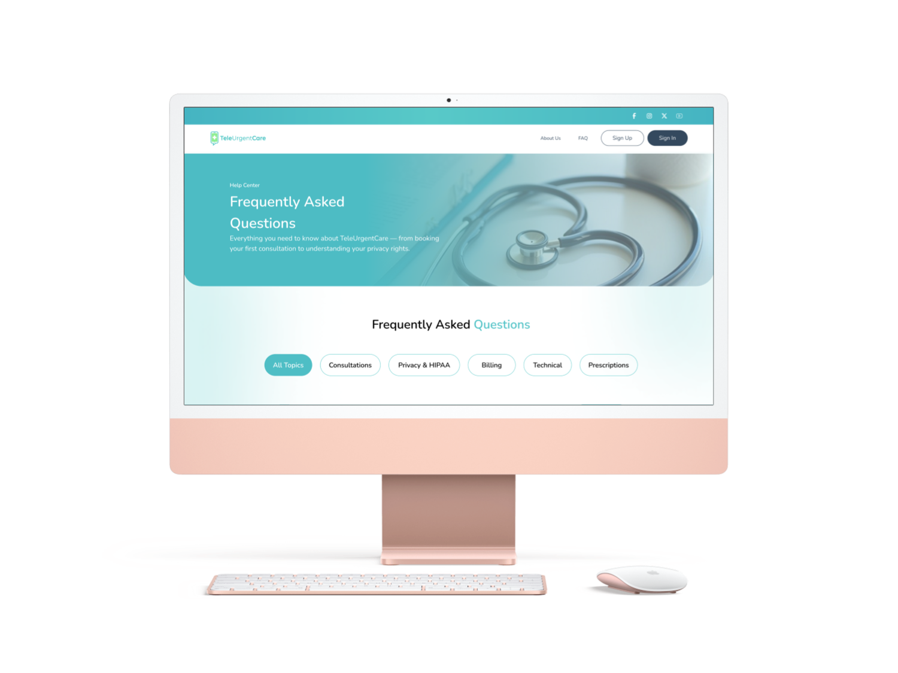
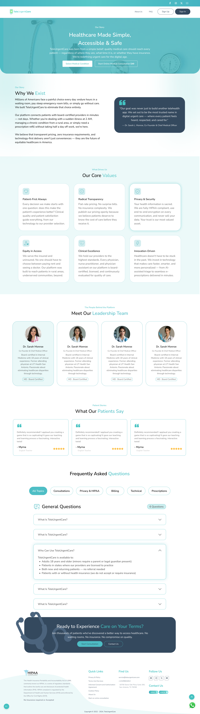

The Urgent Care —
Reimagined for the Digital Age.
A complete digital platform redesign for TUC Urgent Care — connecting patients with certified providers in minutes, not days.
Why We Exist
Millions of Americans face a painful choice every day: endure hours in a waiting room, pay steep emergency room bills, or simply go without care. We built TUCUrgentCare to eliminate that choice entirely.
Our platform connects patients with board-certified providers in minutes — not days. Whether you're dealing with a sudden illness at 2 AM, managing a chronic condition from a rural area, or simply need a prescription refill without taking half a day off work, we're here.
We believe that transparent pricing, zero insurance requirements, and technology-first delivery aren't just conveniences — they are the future of equitable healthcare in America.
"Our goal was never just to build another telehealth app. We set out to be the most trusted name in urgent care — where every patient feels heard, respected, and cared for."
— Keana, Co-Founder & Chief Medical Officer

Our Core Values
Every design decision, every feature, and every pixel was guided by a set of core principles that define who we are.
Patient-First Always
Every decision we make starts with one question: does this make the patient's experience better? Clinical quality and patient satisfaction guide everything, from our technology to our provider selection.
Radical Transparency
No surprise bills. No insurance complexity. We publish our pricing openly because we believe patients deserve to know the cost of care before they receive it.
Privacy & Security
Your health information is sacred. Our fully HIPAA compliant platform and its end-to-end encryption on every communication ensures your data is always kept safe.
Equity in Access
We serve the insured and uninsured. No one should have to choose between paying rent and seeing a doctor. Our platform was built to reach patients in rural areas, underserved communities, beyond.
Clinical Excellence
We only use providers to the highest standards. Every physician on our platform is board-certified, licensed, and continuously evaluated for quality of care.
Innovation Driven
Healthcare doesn't have to be stuck in the past. We invest in technology that makes care faster, smarter, and more personalized — from AI-assisted triage to prescriptions dispensed to nearest pharmacy.
Design Process & Approach
The TUC project demanded a careful balance between clinical credibility and approachable warmth. Healthcare sites often feel cold and institutional — we set out to change that.
Starting with deep user research, we mapped pain points across the patient journey: booking friction, pricing opacity, and the anxiety of medical unknowns. Every UI decision was then made to reduce that anxiety.
Discovery & Research
User interviews, competitor analysis, and accessibility audit of existing healthcare platforms.
Wireframing & IA
Information architecture mapping, low-fidelity wireframes, and user flow validation.
Visual Design
Brand system creation — color, typography, component library — all in Figma.
Build & Launch
Pixel-perfect HTML/CSS build with responsive breakpoints, animations, and performance optimization.
Project Screenshots


Explore More Work
Each project tells a different story. Browse the full portfolio to see what else has been crafted.
View All Projects ›